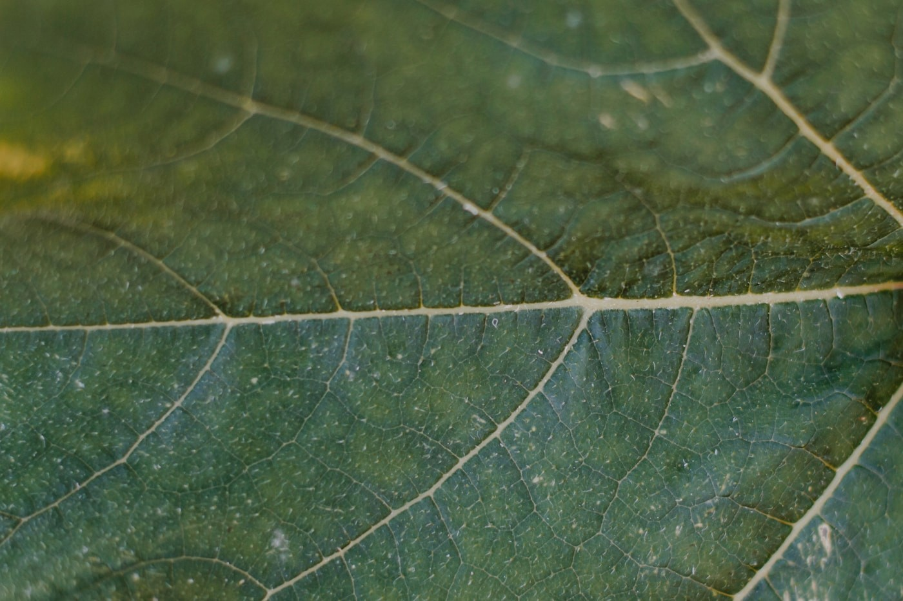

Scan the leaf
Frame the affected area with your phone camera. No lab tools, no guesswork.
Field-ready AI
Planta is an augmented reality-based disease detection system for eggplants. It turns a live camera view into a disease readout, confidence score, and next-step guidance you can use in the field, even when you are offline.

Isolate affected leaves and review treatment guidance.
From leaf to next step
Made for fast checks between rows, with offline detection when the signal drops.
Frame the affected area with your phone camera. No lab tools, no guesswork.
The model runs on your device and flags likely diseases, severity, and confidence even offline.
Get clear guidance for monitoring, isolating, and addressing the issue before it spreads.
Your field, in focus
Planta keeps every scan in one timeline, helping you notice recurring hotspots and make better calls across the season. Your core detection tools stay available offline, wherever the field takes you.
Built for the field
The next check starts here
Free to start. Built around the crop you care for.